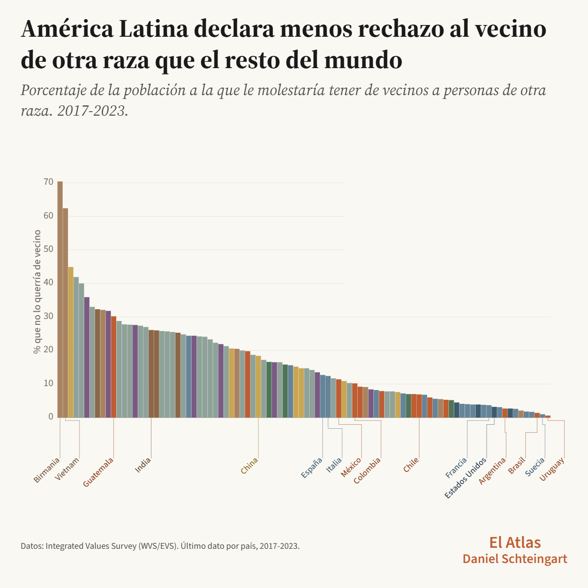
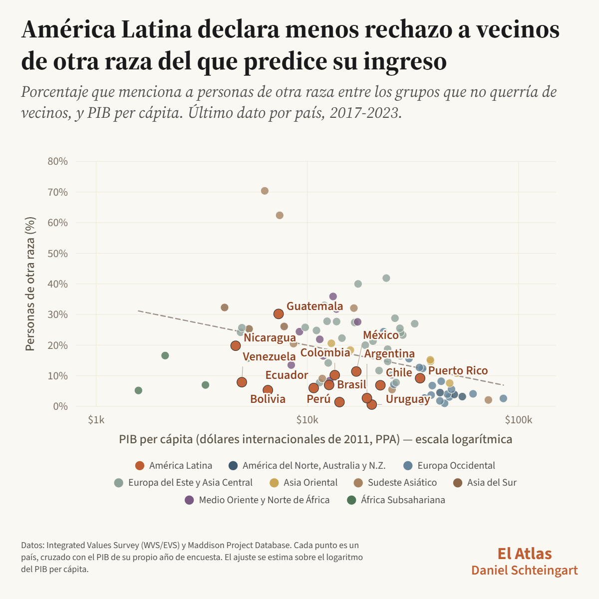
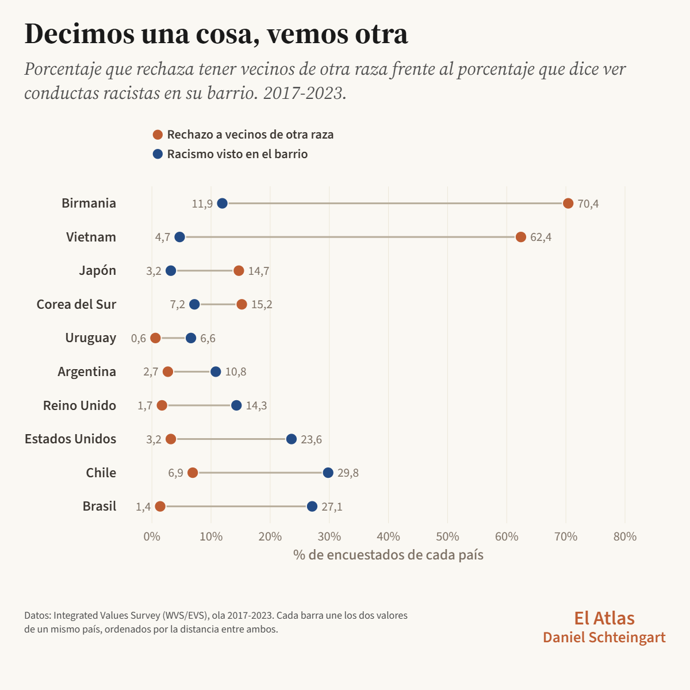
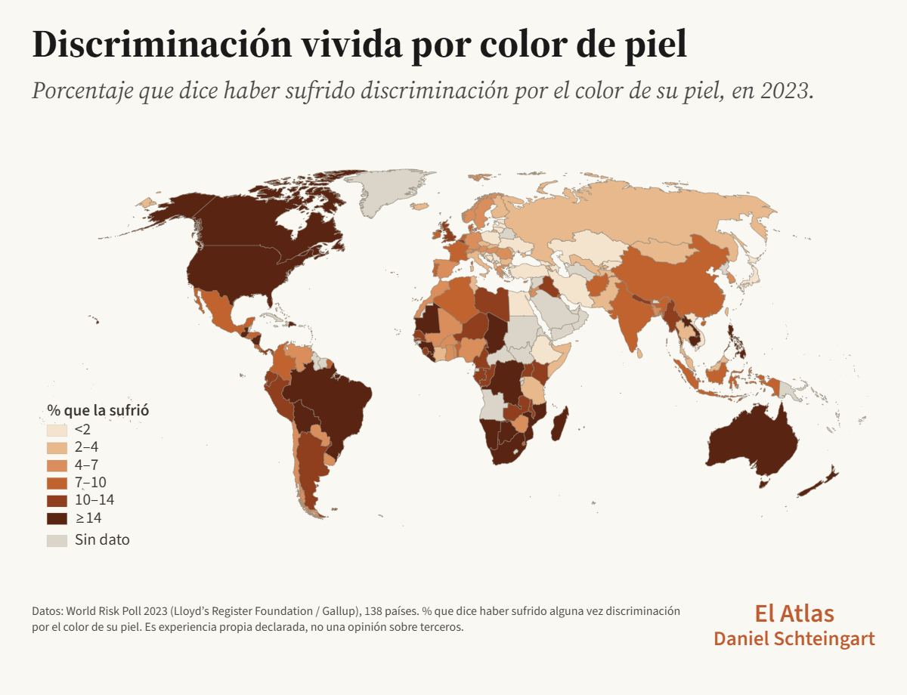
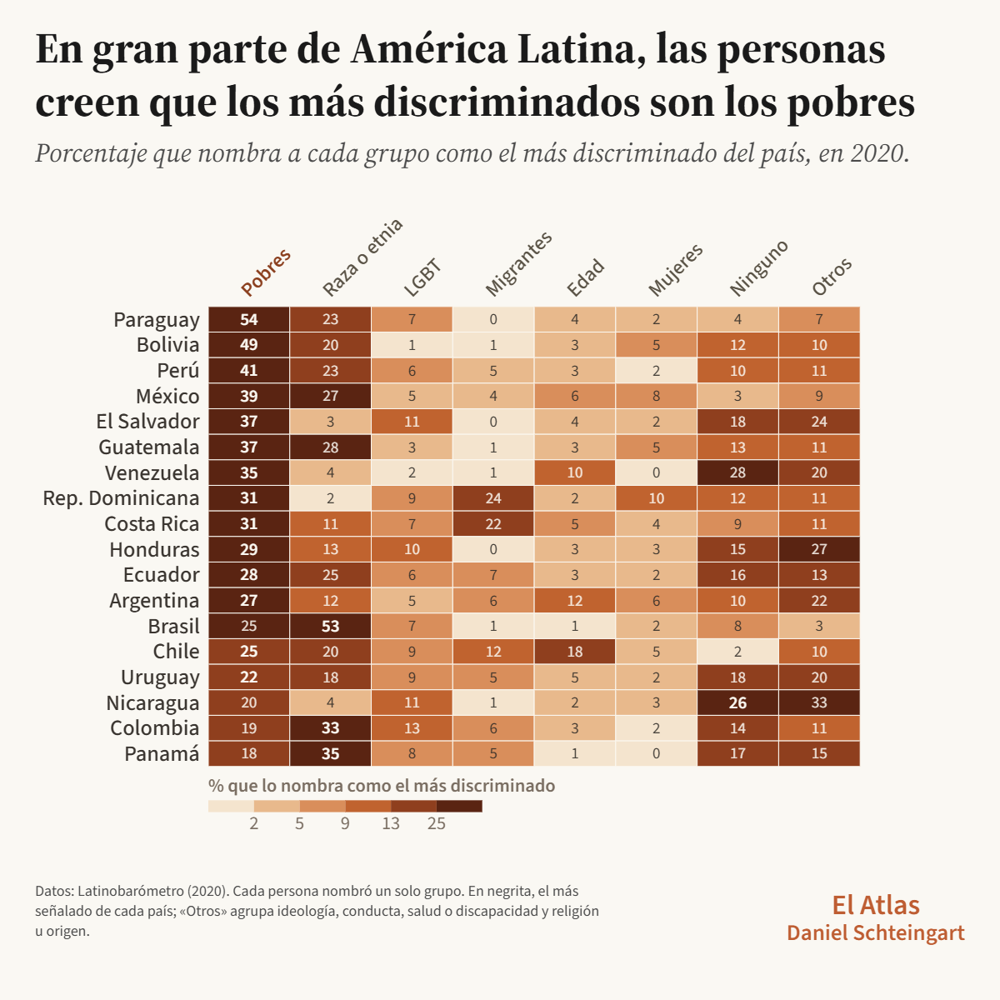
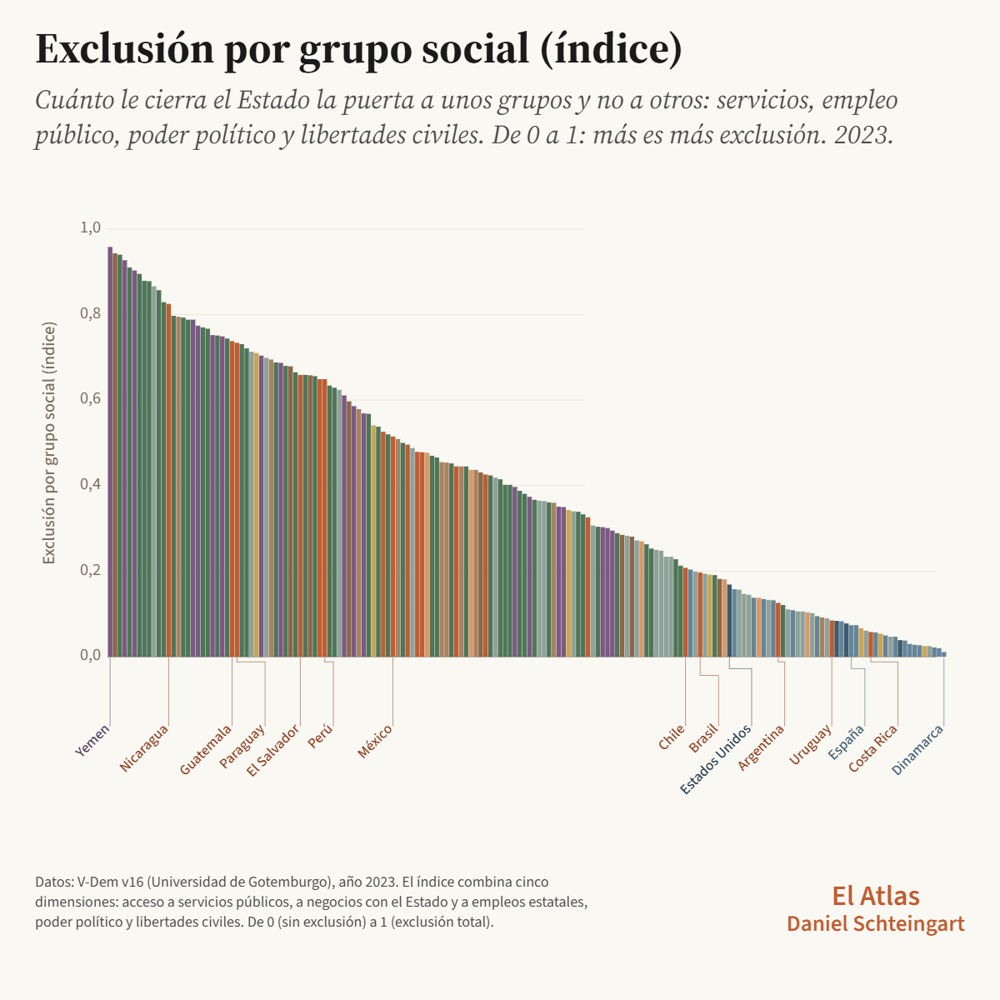

¿El país más racista del mundo?
Qué declaran las encuestas sobre la intolerancia en Argentina, América Latina y el mundo.
Gráficos interactivos

Gráfico 1La batería de vecinos: ranking, mapa, evolución y perfil
Ver gráfico →
Gráfico 9Intolerancia declarada y PIB per cápita
Ver gráfico →
Gráfico 10Dos preguntas de la encuesta
Ver gráfico → Gráfico 5
Gráfico 5
¿Qué ve cada sociedad en su propio barrio?
Ver gráfico →
Discriminación vivida por color de piel World Risk Poll 2023: ranking y mapa de 139 países
Gráfico 8El grupo más discriminado en cada país de América Latina
Ver gráfico →
Gráfico 12La exclusión social en el mundo: comparación, mapa y evolución
Ver gráfico → Gráfico 11
Gráfico 11
Exclusión social y PIB per cápita
Ver gráfico → Gráfico 4
Gráfico 4
Quién tiene prioridad cuando escasea el trabajo
Ver gráfico → Gráfico 6
Gráfico 6
Qué le reprocha cada país al inmigrante
Ver gráfico → Gráfico 7
Gráfico 7
Sentirse parte de un grupo discriminado, en América Latina
Ver gráfico → Gráfico 3
Gráfico 3